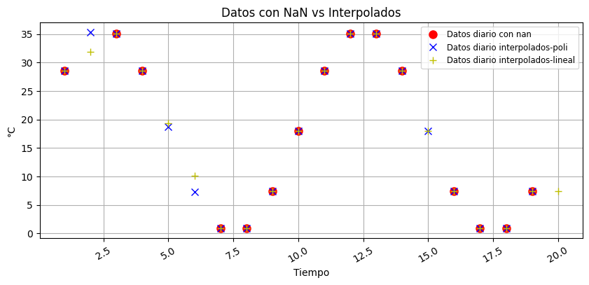
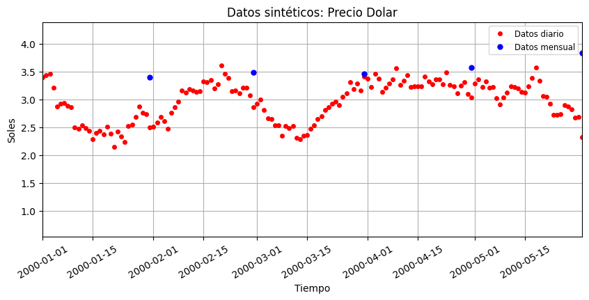
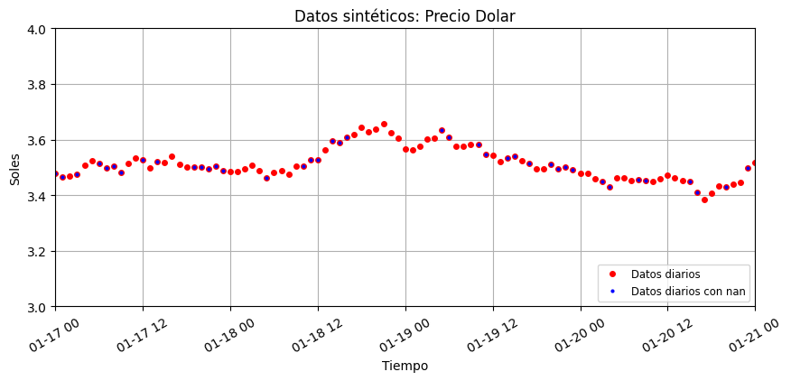
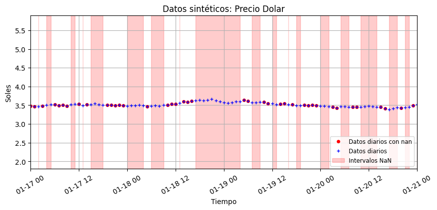

Big Data y Análisis de Datos usando Python con Inteligencia Artificial
| Autor | :VR ROJAS |
|---|---|
| :sacha.analytics@gmail.com | |
| Web | :sacha-analytics |
3. Conceptos básicos de programación para Big Data#
I. Fundamentos de programación básica#
1.1. Tipos de datos y variables#
1.1.1. Datos Categóricos#
Cadena (
string):"Hola"
# data caracter
#----------------------
var_1 = "Hola"
var_2 = "2025"
var_3 = "15"
print("esto es el contenido de la variable var_1 = ",var_1, ", que es tipo no numerico")
print(type(var_1))
print(type(var_2))
print(type(var_3))
print(var_1)
print(var_2)
print(var_3)
print(var_1 + var_2)
print(var_1 + " " + var_2)
esto es el contenido de la variable var_1 = Hola , que es tipo no numerico
<class 'str'>
<class 'str'>
<class 'str'>
Hola
2025
15
Hola2025
Hola 2025
1.1.2. Datos Numéricos#
Entero (
int):42Flotante (
float):3.14
# Datos y variables numericas
#-----------------------------
num_int = 25
num_float= 20.000001
print(type(num_int), type(num_float))
<class 'int'> <class 'float'>
1.1.3. Datos Booleanos#
Booleano (
bool):TrueoFalse
abierto = True
cerrado = False
print(type(abierto), type(cerrado))
print(abierto)
print(cerrado)
<class 'bool'> <class 'bool'>
True
False
1.1.4. Datos Faltantes, nulos o no válidos#
En Python, especialmente cuando trabajas con librerías de manipulación de datos como pandas y NumPy, existen varias formas de representar valores faltantes, nulos o no válidos. Los más comunes son:
Especial (
NoneType):None
sin_valor = None
print(type(sin_valor))
print(sin_valor)
<class 'NoneType'>
None
Especial (
Not a Number):NaN
import numpy as np
dato_no_valido = np.nan
print(type(dato_no_valido))
print(dato_no_valido)
<class 'float'>
nan
1.2. Operadores matemáticos#
# suma
suma = num_int + num_float
exponente = 5**2
div01 = 9/5
residuo_div01 = 9%5
div02 = 9//5
print("suma =",suma)
print(type(suma))
print("exp = ",exponente)
print("div01", div01)
print("residuo_div01",residuo_div01)
print(div02)
suma = 45.000001
<class 'float'>
exp = 25
div01 1.8
residuo_div01 4
1
# importar paquetes
import numpy as np
pi = np.pi
print(pi)
n_euler = np.e
print(n_euler)
3.141592653589793
2.718281828459045
# Funciones algebraicas
#----------------------------------
# funcion esponencial
y1 = n_euler**n_euler
print(y1)
# funcion valor absoluto
y2 = np.abs(-1*num_int)
print(y2)
#funcion raiz cuadrada
y3 = np.sqrt(num_int)
print(y3)
y4 = 125**(1/3)
print(y4)
# funcion logaritmo base 10
y5 = np.log10(10)
print(y5)
# funcion logaritmo base 2
y6 = np.log2(2)
print(y6)
# funcion logaritmo en base e
y7 = np.log(n_euler)
print(y7)
15.154262241479259
25
5.0
4.999999999999999
1.0
1.0
1.0
1.3. Operadores de comparación#
# operadores relacionales
# comparacion (==)
comp01 = num_int == num_float
# diferente (!=)
comp02 = num_int != num_float
# mayor que (>)
comp03 = num_int > num_float
# menor que (<)
comp04 = num_int < num_float
# mayor o igual que (>=)
comp05 = num_int >= num_float
# menor o igual que (<=)
comp06 = num_int <= num_float
print(type(comp01), comp01)
print(type(comp02), comp02)
print(type(comp03), comp03)
print(type(comp04), comp04)
print(type(comp05), comp05)
print(type(comp06), comp06)
<class 'bool'> False
<class 'bool'> True
<class 'bool'> True
<class 'bool'> False
<class 'bool'> True
<class 'bool'> False
1.4 Importar paquetes#
En Python, las librerías y los paquetes son conceptos fundamentales que permiten organizar, reutilizar y compartir código. Aunque a menudo se usan indistintamente, tienen significados técnicos específicos.
Paquetes: Un paquete es una forma de organizar módulos de Python en directorios (carpetas). Un directorio se considera un paquete si contiene un archivo llamado
__init__.py. Este archivo, que puede estar vacío, le dice a Python que el directorio debe ser tratado como un paquete. Los paquetes se utilizan para agrupar módulos relacionados y crear una estructura jerárquica, lo que facilita la gestión de proyectos grandes.Librerías: Una librería (o biblioteca) es un término más general que se refiere a una colección de código ya escrito que puedes usar en tu propio programa. Las librerías de Python se distribuyen comúnmente como paquetes, pero el término “librería” se enfoca en la funcionalidad que proporcionan. Por ejemplo, Pandas y Numpy son librerías muy populares que se instalan como paquetes.

paquete:
aplicacion_01
aplicacion_02
. . . . . . .
aplicacion_n
Formas de importar un paquete y sus aplicaciones
Primera forma
import paquete as pp
var = paquete.aplicacion_01(arg)
Segunda forma
import paquete as pp
var = pp.aplicacion_01(arg)
Tercera forma
from paquete import (aplicacion_01, aplicacion_04)
var_01 = aplicacion_01(arg)
var_02 = aplicacion_04(arg)
import math
import numpy as np
pi_math = math.pi
pi_np = np.pi
print(pi_math)
print(pi_np)
n_euler_math = math.e
n_euler_np = np.e
print(n_euler_math)
print(n_euler_np)
3.141592653589793
3.141592653589793
2.718281828459045
2.718281828459045
1.5. Funciones Algebraicas#
1.5.1. Exponencial#
\(y=f(x) = b^{x}\)
\(Si: b = 5, x = 2 \)
\(⇒ y=f(2)=5^2=25\)
y1 = 5**2
display(y1)
25
1.5.2. Valor absoluto#
\(y = f(x) = |x|\)
si: \(x<0 ⇒ y = f(x) = |x| = (-1) \times x\)
si: \(x>0 → y = f(x) = |x| = x\)
y2 = np.abs(-15)
print(y2)
15
1.5.3. Raíz cuadrada#
\( y=f(x) = \sqrt{x} = x^\frac{1}{2}\)
\( Si: x = 25 \) \(⇒ y=f(25)=\sqrt{25}=5\)
y3 = np.sqrt(25)
print(y3)
5.0
1.5.4. Raíz general#
\( y=f(x) = \sqrt[n]{x^m}= x^{\frac{m}{n}}\)
\( Si: x = 125 \) \(⇒ y=f(125)=\sqrt[3]{125}=\sqrt[3]{5^{3}}=5^{\frac{3}{3}}=5\)
y4 = 125**(1/3)
print(y4)
4.999999999999999
1.5.5 Logaritmo#
\(y = log_{b}x \Rightarrow x = b^y\)
\(Si: b=x ⇒b=b^y \iff y = 1\)
# funcion logaritmo de 10 en base 10
y5 = np.log10(10)
print(y5)
# funcion logaritmo de 2 en base 2
y6 = np.log2(2)
print(y6)
# funcion logaritmo de e en base e
y7 = np.log(n_euler_np)
print(y7)
1.0
1.0
1.0
1.6. Funciones: parte I#
def area_cuadrado(lado):
area = lado**2
return area
ac1 = area_cuadrado(4)
print(ac1)
16
II. Estructura de datos#
Una estructura de datos es una forma de organizar y almacenar información en la memoria de una computadora para que pueda ser utilizada de manera eficiente. En Python, estos objetos permiten manejar colecciones de datos, facilitando tareas como buscar, ordenar, insertar y eliminar elementos.
2.1. Cadenas#
Las cadenas en Python (str) son secuencias inmutables de caracteres Unicode que sirven para gestionar datos de texto. Al ser secuencias ordenadas, sus elementos se manipulan mediante posiciones numéricas, lo que permite extraer subtextos, medir extensiones y aplicar funciones nativas

# Estructuras tipo cadena de caracteres
var_cadena = "Hola a todos"
print(var_cadena)
print(len(var_cadena))
print(var_cadena[0:4])
print(type(var_cadena))
Hola a todos
12
Hola
<class 'str'>
departamentos_peru = "algunos departamentos de Perú son: Lima, Ica, Arequipa y Tacna"
print(departamentos_peru)
print(len(departamentos_peru))
print(departamentos_peru[35:39])
print(type(departamentos_peru))
algunos departamentos de Perú son: Lima, Ica, Arequipa y Tacna
62
Lima
<class 'str'>
separar_frase = departamentos_peru.split()
print(separar_frase)
print(type(separar_frase))
['algunos', 'departamentos', 'de', 'Perú', 'son:', 'Lima,', 'Ica,', 'Arequipa', 'y', 'Tacna']
<class 'list'>
print(list("python"))
['p', 'y', 't', 'h', 'o', 'n']
2.2. Listas#
Las listas son colecciones ordenadas y mutables, lo que significa que puedes añadir, eliminar o modificar elementos después de su creación. Son muy versátiles y se usan comúnmente para almacenar elementos del mismo tipo, aunque pueden contener datos de diferentes tipos.

# listas
lista_01 = [7, "Hola", True, 2024.5]
print(lista_01.index(2024.5))
print(len(lista_01))
print(lista_01[0])
lista_01[3]= "Peru 2025"
print(lista_01)
print(type(lista_01[1]))
3
4
7
[7, 'Hola', True, 'Peru 2025']
<class 'str'>
2.3. Array 1D#
Un array 1D de NumPy es una estructura de datos fundamental en la biblioteca NumPy de Python, diseñada para almacenar una colección de elementos del mismo tipo de datos, como números enteros o de punto flotante. A diferencia de las listas estándar de Python, los arrays de NumPy están optimizados para operaciones matemáticas y científicas, lo que los hace significativamente más rápidos y eficientes en el manejo de grandes volúmenes de datos numéricos.

import numpy as np
# array 1D: np.array()
array_meses_num = np.array([1,2,3,4,5,6,7,8,9,10,11,12])
print(array_meses_num)
print(type(array_meses_num))
print(len(array_meses_num))
[ 1 2 3 4 5 6 7 8 9 10 11 12]
<class 'numpy.ndarray'>
12
# array 1D: np.arange(val_i, num_vals, incremento)
array_arange01 = np.arange(-20, 10, 0.5)
print(array_arange01)
print(len(array_arange01))
[-20. -19.5 -19. -18.5 -18. -17.5 -17. -16.5 -16. -15.5 -15. -14.5
-14. -13.5 -13. -12.5 -12. -11.5 -11. -10.5 -10. -9.5 -9. -8.5
-8. -7.5 -7. -6.5 -6. -5.5 -5. -4.5 -4. -3.5 -3. -2.5
-2. -1.5 -1. -0.5 0. 0.5 1. 1.5 2. 2.5 3. 3.5
4. 4.5 5. 5.5 6. 6.5 7. 7.5 8. 8.5 9. 9.5]
60
# array 1D: np.zeros()
array_zeros01 = np.zeros(4)
print(array_zeros01)
print(type(array_zeros01))
print(len(array_zeros01))
print(np.ndim(array_zeros01))
print(np.shape(array_zeros01))
print(lista_01[1])
array_zeros01[2]==lista_01[1]
[0. 0. 0. 0.]
<class 'numpy.ndarray'>
4
1
(4,)
Hola
np.False_
2.4. Data Frame#
Un DataFrame es una estructura de datos bidimensional, similar a una hoja de cálculo o a una tabla de una base de datos. Se compone de filas y columnas, donde cada columna puede tener un tipo de dato diferente (números, texto, booleanos, etc.) y cada fila representa una observación o registro. Es uno de los objetos más importantes de Pandas y la base para el análisis y la manipulación de datos en Python.
Descripción y características clave
Estructura de tabla: Un DataFrame se parece a una tabla de Excel o a un
SELECTde una base de datos. Tiene etiquetas de columna (nombres para cada columna) y un índice de fila que permite acceder a los registros.Heterogeneidad de datos: A diferencia de los arrays de NumPy, donde todos los elementos deben ser del mismo tipo, cada columna en un DataFrame puede contener datos de un tipo distinto. Esto lo hace ideal para trabajar con datos del mundo real, que suelen ser una mezcla de números, texto, fechas, etc.
Manipulación de datos: Pandas ofrece un conjunto de herramientas muy eficientes para trabajar con DataFrames, permitiendo realizar operaciones como:
Filtrado y selección: Se pueden seleccionar filas o columnas basándose en condiciones específicas.
Limpieza de datos: Manejar valores faltantes (
NaN), eliminar duplicados o corregir errores.Análisis: Realizar cálculos estadísticos (media, mediana, desviación estándar), agrupar datos, y unirlos con otros DataFrames.
Entrada y salida (I/O): Es muy fácil leer datos desde archivos (CSV, Excel, JSON) y escribir resultados en los mismos formatos.
En resumen, el DataFrame de Pandas simplifica la manipulación y el análisis de datos complejos, proporcionando una estructura intuitiva y herramientas potentes para que los científicos de datos y los analistas trabajen de forma productiva.

# importar paquete [pandas] como [pd]
import pandas as pd
lista_animales = ["fox", "kangaroo", "deer","spider","snake"]
array_legs = np.array([4,2,4,8,np.nan])
display(lista_animales)
display(array_legs)
['fox', 'kangaroo', 'deer', 'spider', 'snake']
array([ 4., 2., 4., 8., nan])
df_animales = pd.DataFrame({'animal': lista_animales,
'legs': array_legs})
display(df_animales)
| animal | legs | |
|---|---|---|
| 0 | fox | 4.0 |
| 1 | kangaroo | 2.0 |
| 2 | deer | 4.0 |
| 3 | spider | 8.0 |
| 4 | snake | NaN |
III. Estructuras de control de flujo#
Las estructuras de control en Python son construcciones de programación que permiten modificar el flujo de ejecución de un programa. En lugar de ejecutar las instrucciones de forma secuencial de arriba a abajo, estas estructuras dirigen el programa para que tome decisiones, repita acciones o ejecute bloques de código específicos.
3.1. Condicionales: if, else y elif#
Las estructuras de control condicionales también denominadas estructuras de selección, permiten que el programa tome decisiones. El bloque de código sólo se ejecuta si se cumple una condición específica.
# condicionales: if, elif, else
var = 23
if type(var)==int:
print("var es entero")
print("segunda accion de if")
else:
print("var no es un numero entero")
var es entero
segunda accion de if
# condicionales: if, elif, else
a = 7
b = 7
if a > b:
print("(1)", a,">",b ,a > b)
elif a < b:
print("(2)", a,"<",b ,a < b)
elif a == b:
print("(3)", a,"==",b ,a == b)
(3) 7 == 7 True
3.2. Bucle ó Loop: for#
Las estructuras de control tipo bucle (o loop) en Python son construcciones de código que permiten ejecutar un bloque de instrucciones de manera repetida. Su propósito principal es automatizar tareas que deben realizarse múltiples veces, ya sea un número fijo de veces o hasta que se cumpla una condición específica.
El bucle for se utiliza para iterar sobre una secuencia de elementos, como una lista, una tupla, un diccionario o una cadena de texto. La iteración se detiene automáticamente una vez que se han procesado todos los elementos de la secuencia.
Control de flujo: for
for arg01 in arg02:
aplicacion_01
aplicacion_02
........
aplicacion_n
3.2.1 Uso de del bucle for en estructura de datos lista#
lista_01 = ["hola", 2024, "mundo", 2024.5]
| | | |
v v v v
0 1 2 3
print(lista_01[0])
print(lista_01[1])
7
Hola
n_elem = len(lista_01)
print(n_elem)
4
for i in range(n_elem):
print(lista_01[i])
7
Hola
True
Peru 2025
3.2.2. Analisis exploratorio y procesamiento de la variable lista_01#
for i in range(n_elem):
if type(lista_01[i])==int:
lista_01[i]= str(lista_01[i])
print(lista_01[i])
7
print(lista_01)
['7', 'Hola', True, 'Peru 2025']
3.2.3. Uso del bucle for en estructura de datos Data Frame#
data = np.arange(0.0, 2.0, 0.1)
print(data)
temp_aire = 18*(1 + np.sin(2 * np.pi * data))
print(temp_aire)
[0. 0.1 0.2 0.3 0.4 0.5 0.6 0.7 0.8 0.9 1. 1.1 1.2 1.3 1.4 1.5 1.6 1.7
1.8 1.9]
[18. 28.58013454 35.11901729 35.11901729 28.58013454 18.
7.41986546 0.88098271 0.88098271 7.41986546 18. 28.58013454
35.11901729 35.11901729 28.58013454 18. 7.41986546 0.88098271
0.88098271 7.41986546]
# Creando un data frame
df = pd.DataFrame()
print(df)
Empty DataFrame
Columns: []
Index: []
df["temperatura"]= temp_aire
display(df)
| temperatura | |
|---|---|
| 0 | 18.000000 |
| 1 | 28.580135 |
| 2 | 35.119017 |
| 3 | 35.119017 |
| 4 | 28.580135 |
| 5 | 18.000000 |
| 6 | 7.419865 |
| 7 | 0.880983 |
| 8 | 0.880983 |
| 9 | 7.419865 |
| 10 | 18.000000 |
| 11 | 28.580135 |
| 12 | 35.119017 |
| 13 | 35.119017 |
| 14 | 28.580135 |
| 15 | 18.000000 |
| 16 | 7.419865 |
| 17 | 0.880983 |
| 18 | 0.880983 |
| 19 | 7.419865 |
df["datos_decimales"]=data
display(df)
| temperatura | datos_decimales | |
|---|---|---|
| 0 | 18.000000 | 0.0 |
| 1 | 28.580135 | 0.1 |
| 2 | 35.119017 | 0.2 |
| 3 | 35.119017 | 0.3 |
| 4 | 28.580135 | 0.4 |
| 5 | 18.000000 | 0.5 |
| 6 | 7.419865 | 0.6 |
| 7 | 0.880983 | 0.7 |
| 8 | 0.880983 | 0.8 |
| 9 | 7.419865 | 0.9 |
| 10 | 18.000000 | 1.0 |
| 11 | 28.580135 | 1.1 |
| 12 | 35.119017 | 1.2 |
| 13 | 35.119017 | 1.3 |
| 14 | 28.580135 | 1.4 |
| 15 | 18.000000 | 1.5 |
| 16 | 7.419865 | 1.6 |
| 17 | 0.880983 | 1.7 |
| 18 | 0.880983 | 1.8 |
| 19 | 7.419865 | 1.9 |
hr = 2.5*temp_aire +5.6
df["humedad_relativa"] = hr
display(df)
| temperatura | datos_decimales | humedad_relativa | |
|---|---|---|---|
| 0 | 18.000000 | 0.0 | 50.600000 |
| 1 | 28.580135 | 0.1 | 77.050336 |
| 2 | 35.119017 | 0.2 | 93.397543 |
| 3 | 35.119017 | 0.3 | 93.397543 |
| 4 | 28.580135 | 0.4 | 77.050336 |
| 5 | 18.000000 | 0.5 | 50.600000 |
| 6 | 7.419865 | 0.6 | 24.149664 |
| 7 | 0.880983 | 0.7 | 7.802457 |
| 8 | 0.880983 | 0.8 | 7.802457 |
| 9 | 7.419865 | 0.9 | 24.149664 |
| 10 | 18.000000 | 1.0 | 50.600000 |
| 11 | 28.580135 | 1.1 | 77.050336 |
| 12 | 35.119017 | 1.2 | 93.397543 |
| 13 | 35.119017 | 1.3 | 93.397543 |
| 14 | 28.580135 | 1.4 | 77.050336 |
| 15 | 18.000000 | 1.5 | 50.600000 |
| 16 | 7.419865 | 1.6 | 24.149664 |
| 17 | 0.880983 | 1.7 | 7.802457 |
| 18 | 0.880983 | 1.8 | 7.802457 |
| 19 | 7.419865 | 1.9 | 24.149664 |
print(df.iloc[5, 2]) # [fila, columna]
50.60000000000001
# numero total de elementos o medidas del data frame
print(df.size)
# dimensiones del data frame
print(df.shape)
# nombres de las columnas
print(df.columns)
60
(20, 3)
Index(['temperatura', 'datos_decimales', 'humedad_relativa'], dtype='object')
parte_df = df[["temperatura","humedad_relativa"]]
parte_df["txhr"] = df["temperatura"]*df["humedad_relativa"]
display(parte_df)
| temperatura | humedad_relativa | txhr | |
|---|---|---|---|
| 0 | 18.000000 | 50.600000 | 910.800000 |
| 1 | 28.580135 | 77.050336 | 2202.108979 |
| 2 | 35.119017 | 93.397543 | 3280.029936 |
| 3 | 35.119017 | 93.397543 | 3280.029936 |
| 4 | 28.580135 | 77.050336 | 2202.108979 |
| 5 | 18.000000 | 50.600000 | 910.800000 |
| 6 | 7.419865 | 24.149664 | 179.187255 |
| 7 | 0.880983 | 7.802457 | 6.873829 |
| 8 | 0.880983 | 7.802457 | 6.873829 |
| 9 | 7.419865 | 24.149664 | 179.187255 |
| 10 | 18.000000 | 50.600000 | 910.800000 |
| 11 | 28.580135 | 77.050336 | 2202.108979 |
| 12 | 35.119017 | 93.397543 | 3280.029936 |
| 13 | 35.119017 | 93.397543 | 3280.029936 |
| 14 | 28.580135 | 77.050336 | 2202.108979 |
| 15 | 18.000000 | 50.600000 | 910.800000 |
| 16 | 7.419865 | 24.149664 | 179.187255 |
| 17 | 0.880983 | 7.802457 | 6.873829 |
| 18 | 0.880983 | 7.802457 | 6.873829 |
| 19 | 7.419865 | 24.149664 | 179.187255 |
print(parte_df["temperatura"])
0 18.000000
1 28.580135
2 35.119017
3 35.119017
4 28.580135
5 18.000000
6 7.419865
7 0.880983
8 0.880983
9 7.419865
10 18.000000
11 28.580135
12 35.119017
13 35.119017
14 28.580135
15 18.000000
16 7.419865
17 0.880983
18 0.880983
19 7.419865
Name: temperatura, dtype: float64
display(parte_df.describe())
| temperatura | humedad_relativa | txhr | |
|---|---|---|---|
| count | 20.000000 | 20.000000 | 20.000000 |
| mean | 18.000000 | 50.600000 | 1315.800000 |
| std | 13.058573 | 32.646431 | 1282.509391 |
| min | 0.880983 | 7.802457 | 6.873829 |
| 25% | 7.419865 | 24.149664 | 179.187255 |
| 50% | 18.000000 | 50.600000 | 910.800000 |
| 75% | 28.580135 | 77.050336 | 2202.108979 |
| max | 35.119017 | 93.397543 | 3280.029936 |
df.iloc[2,1]= np.nan
display(df)
| temperatura | datos_decimales | humedad_relativa | |
|---|---|---|---|
| 0 | 18.000000 | 0.0 | 50.600000 |
| 1 | 28.580135 | 0.1 | 77.050336 |
| 2 | 35.119017 | NaN | 93.397543 |
| 3 | 35.119017 | 0.3 | 93.397543 |
| 4 | 28.580135 | 0.4 | 77.050336 |
| 5 | 18.000000 | 0.5 | 50.600000 |
| 6 | 7.419865 | 0.6 | 24.149664 |
| 7 | 0.880983 | 0.7 | 7.802457 |
| 8 | 0.880983 | 0.8 | 7.802457 |
| 9 | 7.419865 | 0.9 | 24.149664 |
| 10 | 18.000000 | 1.0 | 50.600000 |
| 11 | 28.580135 | 1.1 | 77.050336 |
| 12 | 35.119017 | 1.2 | 93.397543 |
| 13 | 35.119017 | 1.3 | 93.397543 |
| 14 | 28.580135 | 1.4 | 77.050336 |
| 15 | 18.000000 | 1.5 | 50.600000 |
| 16 | 7.419865 | 1.6 | 24.149664 |
| 17 | 0.880983 | 1.7 | 7.802457 |
| 18 | 0.880983 | 1.8 | 7.802457 |
| 19 | 7.419865 | 1.9 | 24.149664 |
display(df.describe())
| temperatura | datos_decimales | humedad_relativa | |
|---|---|---|---|
| count | 20.000000 | 19.000000 | 20.000000 |
| mean | 18.000000 | 0.989474 | 50.600000 |
| std | 13.058573 | 0.580129 | 32.646431 |
| min | 0.880983 | 0.000000 | 7.802457 |
| 25% | 7.419865 | 0.550000 | 24.149664 |
| 50% | 18.000000 | 1.000000 | 50.600000 |
| 75% | 28.580135 | 1.450000 | 77.050336 |
| max | 35.119017 | 1.900000 | 93.397543 |
display(df.head(n=5))
| temperatura | datos_decimales | humedad_relativa | |
|---|---|---|---|
| 0 | 18.000000 | 0.0 | 50.600000 |
| 1 | 28.580135 | 0.1 | 77.050336 |
| 2 | 35.119017 | NaN | 93.397543 |
| 3 | 35.119017 | 0.3 | 93.397543 |
| 4 | 28.580135 | 0.4 | 77.050336 |
# Usando un bucle for (menos eficiente para DataFrames grandes)
estaciones = []
for data in df["temperatura"]:
if data > 28:
estaciones.append("verano")
else:
estaciones.append(np.nan)
display(estaciones)
[nan,
'verano',
'verano',
'verano',
'verano',
nan,
nan,
nan,
nan,
nan,
nan,
'verano',
'verano',
'verano',
'verano',
nan,
nan,
nan,
nan,
nan]
df["estacion"] = estaciones
display(df.head(n=6))
| temperatura | datos_decimales | humedad_relativa | estacion | |
|---|---|---|---|---|
| 0 | 18.000000 | 0.0 | 50.600000 | NaN |
| 1 | 28.580135 | 0.1 | 77.050336 | verano |
| 2 | 35.119017 | NaN | 93.397543 | verano |
| 3 | 35.119017 | 0.3 | 93.397543 | verano |
| 4 | 28.580135 | 0.4 | 77.050336 | verano |
| 5 | 18.000000 | 0.5 | 50.600000 | NaN |
display(df.describe())
| temperatura | datos_decimales | humedad_relativa | |
|---|---|---|---|
| count | 20.000000 | 19.000000 | 20.000000 |
| mean | 18.000000 | 0.989474 | 50.600000 |
| std | 13.058573 | 0.580129 | 32.646431 |
| min | 0.880983 | 0.000000 | 7.802457 |
| 25% | 7.419865 | 0.550000 | 24.149664 |
| 50% | 18.000000 | 1.000000 | 50.600000 |
| 75% | 28.580135 | 1.450000 | 77.050336 |
| max | 35.119017 | 1.900000 | 93.397543 |
3.3. Funciones: parte II#
Ejemplo: Implementar la función convert_temp para convertir valores de temperatura de grados Celsius a la escala Kelvin y Fahrenheit, ecuaciones (2) y (3), respectivamente.
def convert_temp(data, tipo):
if tipo=="K":
temp = data + 273.15
elif tipo=="F":
temp = (data) * 9/5 + 32
return temp
3.3.1. Uso de función con un dato#
display(convert_temp(100, "F"))
212.0
display(convert_temp(100, "F"))
212.0
3.3.2. Uso de función con una estructura de datos#
temp_k = convert_temp(df["temperatura"], "K")
display(temp_k.head(n=6))
0 291.150000
1 301.730135
2 308.269017
3 308.269017
4 301.730135
5 291.150000
Name: temperatura, dtype: float64
df["temperatura_k"]= temp_k
display(df.head(n=6))
| temperatura | datos_decimales | humedad_relativa | estacion | temperatura_k | |
|---|---|---|---|---|---|
| 0 | 18.000000 | 0.0 | 50.600000 | NaN | 291.150000 |
| 1 | 28.580135 | 0.1 | 77.050336 | verano | 301.730135 |
| 2 | 35.119017 | NaN | 93.397543 | verano | 308.269017 |
| 3 | 35.119017 | 0.3 | 93.397543 | verano | 308.269017 |
| 4 | 28.580135 | 0.4 | 77.050336 | verano | 301.730135 |
| 5 | 18.000000 | 0.5 | 50.600000 | NaN | 291.150000 |
IV. Manejo y control de calidad de datos#
4.1. Crear copias de una Data Frame#
Crea una copia df_copia1 del Data Frame df.
df_copia1 = df.copy()
display(df_copia1.head(n=6))
| temperatura | datos_decimales | humedad_relativa | estacion | temperatura_k | |
|---|---|---|---|---|---|
| 0 | 18.000000 | 0.0 | 50.600000 | NaN | 291.150000 |
| 1 | 28.580135 | 0.1 | 77.050336 | verano | 301.730135 |
| 2 | 35.119017 | NaN | 93.397543 | verano | 308.269017 |
| 3 | 35.119017 | 0.3 | 93.397543 | verano | 308.269017 |
| 4 | 28.580135 | 0.4 | 77.050336 | verano | 301.730135 |
| 5 | 18.000000 | 0.5 | 50.600000 | NaN | 291.150000 |
Crea una copia df_copia2 del Data Frame df.
df_copia2 = df.copy()
display(df_copia2.head(n=6))
| temperatura | datos_decimales | humedad_relativa | estacion | temperatura_k | |
|---|---|---|---|---|---|
| 0 | 18.000000 | 0.0 | 50.600000 | NaN | 291.150000 |
| 1 | 28.580135 | 0.1 | 77.050336 | verano | 301.730135 |
| 2 | 35.119017 | NaN | 93.397543 | verano | 308.269017 |
| 3 | 35.119017 | 0.3 | 93.397543 | verano | 308.269017 |
| 4 | 28.580135 | 0.4 | 77.050336 | verano | 301.730135 |
| 5 | 18.000000 | 0.5 | 50.600000 | NaN | 291.150000 |
En df_copia2 reemplazar los valores extremos de todas columnas con datos faltantes o errados NaN.
index_ultimoDato = len(df_copia2)
# Introducir NaNs adicionales para la demostración en df_copia2
df_copia2.loc[0, 'temperatura'] = np.nan
df_copia2.loc[2, 'temperatura'] = np.nan
df_copia2.loc[5, 'temperatura'] = np.nan
df_copia2.loc[6, 'temperatura'] = np.nan
df_copia2.loc[15, 'temperatura'] = np.nan
df_copia2.loc[index_ultimoDato, 'temperatura'] = np.nan
display(df_copia2.head(n=3))
display(df_copia2.tail(n=3))
| temperatura | datos_decimales | humedad_relativa | estacion | temperatura_k | |
|---|---|---|---|---|---|
| 0 | NaN | 0.0 | 50.600000 | NaN | 291.150000 |
| 1 | 28.580135 | 0.1 | 77.050336 | verano | 301.730135 |
| 2 | NaN | NaN | 93.397543 | verano | 308.269017 |
| temperatura | datos_decimales | humedad_relativa | estacion | temperatura_k | |
|---|---|---|---|---|---|
| 18 | 0.880983 | 1.8 | 7.802457 | NaN | 274.030983 |
| 19 | 7.419865 | 1.9 | 24.149664 | NaN | 280.569865 |
| 20 | NaN | NaN | NaN | NaN | NaN |
4.2. Contar valores NaN:#
def contar_nan(dataframe):
# numero de NaN por columna
nan_counts = dataframe.isna().sum()
# numero total de filas en el DataFrame
total_rows = len(dataframe)
# porcentaje de NaN por columna
nan_porcentaje = (nan_counts / total_rows) * 100
# Crear un DataFrame para mostrar la cantidad y porcentajes de NaN
nan_summary = pd.DataFrame({
'NaN Cantidad': nan_counts,
'NaN Porcemtaje (%)': nan_porcentaje
})
return nan_summary
# Contar NaN en df_copia1
resultado_nan = contar_nan(df_copia1)
print("Resumen de valores NaN por columna en df_copia1:")
display(resultado_nan)
Resumen de valores NaN por columna en df_copia1:
| NaN Cantidad | NaN Porcemtaje (%) | |
|---|---|---|
| temperatura | 0 | 0.0 |
| datos_decimales | 1 | 5.0 |
| humedad_relativa | 0 | 0.0 |
| estacion | 12 | 60.0 |
| temperatura_k | 0 | 0.0 |
# Contar NaN en df_copia2
resultado_nan = contar_nan(df_copia2)
print("Resumen de valores NaN por columna en df_copia2:")
display(resultado_nan)
Resumen de valores NaN por columna en df_copia2:
| NaN Cantidad | NaN Porcemtaje (%) | |
|---|---|---|
| temperatura | 6 | 28.571429 |
| datos_decimales | 2 | 9.523810 |
| humedad_relativa | 1 | 4.761905 |
| estacion | 13 | 61.904762 |
| temperatura_k | 1 | 4.761905 |
4.3. Completar datos errados ó faltantes#
Implementar la función completar_nan:
def completar_nan(dataframe, metodo='ffill', valor=None):
"""
Completa valores NaN en un DataFrame.
metodo: 'ffill', 'bfill', o 'constante'
valor: valor a usar si metodo='constante'
"""
if metodo == 'constante':
return dataframe.fillna(value=valor)
elif metodo == 'ffill':
return dataframe.ffill()
elif metodo == 'bfill':
return dataframe.bfill()
else:
return dataframe.fillna(method=metodo)
# Aplicando la función a df_copia1
df_copia1_completado = completar_nan(df_copia1, metodo='ffill')
print("Vista previa de df_copia1 completado (ffill):")
display(df_copia1_completado.head(n=6))
Vista previa de df_copia1 completado (ffill):
| temperatura | datos_decimales | humedad_relativa | estacion | temperatura_k | |
|---|---|---|---|---|---|
| 0 | 18.000000 | 0.0 | 50.600000 | NaN | 291.150000 |
| 1 | 28.580135 | 0.1 | 77.050336 | verano | 301.730135 |
| 2 | 35.119017 | 0.1 | 93.397543 | verano | 308.269017 |
| 3 | 35.119017 | 0.3 | 93.397543 | verano | 308.269017 |
| 4 | 28.580135 | 0.4 | 77.050336 | verano | 301.730135 |
| 5 | 18.000000 | 0.5 | 50.600000 | verano | 291.150000 |
display(contar_nan(df_copia1_completado))
| NaN Cantidad | NaN Porcemtaje (%) | |
|---|---|---|
| temperatura | 0 | 0.0 |
| datos_decimales | 0 | 0.0 |
| humedad_relativa | 0 | 0.0 |
| estacion | 1 | 5.0 |
| temperatura_k | 0 | 0.0 |
Explicación de los métodos ffill y bfill en la función completar_nan
Dentro de la función completar_nan, los métodos ffill() y bfill() se utilizan para rellenar los valores faltantes (NaN) en un DataFrame de pandas de la siguiente manera:
ffill()(Forward Fill o Relleno Hacia Adelante):Este método propaga la última observación válida hacia adelante para rellenar los valores nulos (
NaN).Es decir, si hay un
NaN,ffilltoma el valor de la celda inmediatamente anterior (superior) en la misma columna y lo usa para rellenar eseNaN.Ejemplo: Si una columna tiene los valores
[10, NaN, 20], después de aplicarffill, se convertirá en[10, 10, 20]. ElNaNse rellena con el10de la fila anterior.Uso común: Es útil en series de tiempo donde se asume que un valor permanece constante hasta que se registra una nueva observación.
bfill()(Backward Fill o Relleno Hacia Atrás):Este método propaga la próxima observación válida hacia atrás para rellenar los valores nulos (
NaN).En este caso, si hay un
NaN,bfilltoma el valor de la celda inmediatamente posterior (inferior) en la misma columna y lo usa para rellenar eseNaN.Ejemplo: Si una columna tiene los valores
[10, NaN, 20], después de aplicarbfill, se convertirá en[10, 20, 20]. ElNaNse rellena con el20de la fila siguiente.Uso común: Puede ser adecuado cuando el valor faltante es mejor representado por una observación futura, o cuando se desea rellenar desde el final de la serie hacia el principio.
4.4. interpolar datos faltantes en columnas numéricas específicas#
La función completar_nan_col se encargará de identificar las columnas numéricas en un DataFrame y aplicar el método de interpolación especificado para rellenar los valores NaN.
Métodos de interpolación de Pandas:
pandas.DataFrame.interpolate() soporta varios métodos, los más comunes son:
'linear': Rellena los valores NaN de forma lineal entre los valores válidos. Es el método por defecto y uno de los más utilizados.'nearest': Utiliza el valor válido más cercano (anterior o siguiente).'zero': Rellena con 0.'slinear','quadratic','cubic': Métodos basados en splines (curvas suaves). Requieren más puntos de datos y pueden ser útiles para datos que siguen una curva.'polynomial': Rellena utilizando un ajuste polinómico. Requiere especificar elorder(grado del polinomio).'spline': Rellena utilizando una interpolación spline. Requiere especificar elorder.'pad','ffill': Rellena hacia adelante usando el último valor válido.'bfill': Rellena hacia atrás usando el siguiente valor válido.
def completar_nan_col(dataframe, method='linear', **kwargs):
"""
Completa valores NaN solo en columnas numéricas de un DataFrame
utilizando el método de interpolación especificado.
Args:
dataframe (pd.DataFrame): El DataFrame de entrada.
method (str): El método de interpolación a usar. Ej: 'linear', 'spline', 'polynomial'.
**kwargs: Argumentos adicionales para el método `interpolate` (ej. `order` para 'polynomial'/'spline').
Returns:
pd.DataFrame: El DataFrame con los NaNs en columnas numéricas interpolados.
"""
import scipy.interpolate as interpolate
df_interpolado = dataframe.copy()
numeric_cols = df_interpolado.select_dtypes(include=np.number).columns
for col in numeric_cols:
# Solo interpolar si la columna tiene NaNs
if df_interpolado[col].isnull().any():
df_interpolado[col] = df_interpolado[col].interpolate(method=method, **kwargs)
return df_interpolado
display(df_copia2)
| temperatura | datos_decimales | humedad_relativa | estacion | temperatura_k | |
|---|---|---|---|---|---|
| 0 | NaN | 0.0 | 50.600000 | NaN | 291.150000 |
| 1 | 28.580135 | 0.1 | 77.050336 | verano | 301.730135 |
| 2 | NaN | NaN | 93.397543 | verano | 308.269017 |
| 3 | 35.119017 | 0.3 | 93.397543 | verano | 308.269017 |
| 4 | 28.580135 | 0.4 | 77.050336 | verano | 301.730135 |
| 5 | NaN | 0.5 | 50.600000 | NaN | 291.150000 |
| 6 | NaN | 0.6 | 24.149664 | NaN | 280.569865 |
| 7 | 0.880983 | 0.7 | 7.802457 | NaN | 274.030983 |
| 8 | 0.880983 | 0.8 | 7.802457 | NaN | 274.030983 |
| 9 | 7.419865 | 0.9 | 24.149664 | NaN | 280.569865 |
| 10 | 18.000000 | 1.0 | 50.600000 | NaN | 291.150000 |
| 11 | 28.580135 | 1.1 | 77.050336 | verano | 301.730135 |
| 12 | 35.119017 | 1.2 | 93.397543 | verano | 308.269017 |
| 13 | 35.119017 | 1.3 | 93.397543 | verano | 308.269017 |
| 14 | 28.580135 | 1.4 | 77.050336 | verano | 301.730135 |
| 15 | NaN | 1.5 | 50.600000 | NaN | 291.150000 |
| 16 | 7.419865 | 1.6 | 24.149664 | NaN | 280.569865 |
| 17 | 0.880983 | 1.7 | 7.802457 | NaN | 274.030983 |
| 18 | 0.880983 | 1.8 | 7.802457 | NaN | 274.030983 |
| 19 | 7.419865 | 1.9 | 24.149664 | NaN | 280.569865 |
| 20 | NaN | NaN | NaN | NaN | NaN |
print("Valores NaN en df_copia2 antes de la interpolación:")
display(contar_nan(df_copia2))
Valores NaN en df_copia2 antes de la interpolación:
| NaN Cantidad | NaN Porcemtaje (%) | |
|---|---|---|
| temperatura | 6 | 28.571429 |
| datos_decimales | 2 | 9.523810 |
| humedad_relativa | 1 | 4.761905 |
| estacion | 13 | 61.904762 |
| temperatura_k | 1 | 4.761905 |
Acontinuación aplicaremos la función completar_nan_col con diferentes métodos de interpolación.
4.4.1 Interpolación lineal#
# Aplicar interpolación 'linear'
df_copia2_interp_lineal = completar_nan_col(df_copia2, method='linear')
print("\nDataFrame después de interpolación 'linear' (primeras 7 filas):")
display(df_copia2_interp_lineal)
DataFrame después de interpolación 'linear' (primeras 7 filas):
| temperatura | datos_decimales | humedad_relativa | estacion | temperatura_k | |
|---|---|---|---|---|---|
| 0 | NaN | 0.0 | 50.600000 | NaN | 291.150000 |
| 1 | 28.580135 | 0.1 | 77.050336 | verano | 301.730135 |
| 2 | 31.849576 | 0.2 | 93.397543 | verano | 308.269017 |
| 3 | 35.119017 | 0.3 | 93.397543 | verano | 308.269017 |
| 4 | 28.580135 | 0.4 | 77.050336 | verano | 301.730135 |
| 5 | 19.347084 | 0.5 | 50.600000 | NaN | 291.150000 |
| 6 | 10.114033 | 0.6 | 24.149664 | NaN | 280.569865 |
| 7 | 0.880983 | 0.7 | 7.802457 | NaN | 274.030983 |
| 8 | 0.880983 | 0.8 | 7.802457 | NaN | 274.030983 |
| 9 | 7.419865 | 0.9 | 24.149664 | NaN | 280.569865 |
| 10 | 18.000000 | 1.0 | 50.600000 | NaN | 291.150000 |
| 11 | 28.580135 | 1.1 | 77.050336 | verano | 301.730135 |
| 12 | 35.119017 | 1.2 | 93.397543 | verano | 308.269017 |
| 13 | 35.119017 | 1.3 | 93.397543 | verano | 308.269017 |
| 14 | 28.580135 | 1.4 | 77.050336 | verano | 301.730135 |
| 15 | 18.000000 | 1.5 | 50.600000 | NaN | 291.150000 |
| 16 | 7.419865 | 1.6 | 24.149664 | NaN | 280.569865 |
| 17 | 0.880983 | 1.7 | 7.802457 | NaN | 274.030983 |
| 18 | 0.880983 | 1.8 | 7.802457 | NaN | 274.030983 |
| 19 | 7.419865 | 1.9 | 24.149664 | NaN | 280.569865 |
| 20 | 7.419865 | 1.9 | 24.149664 | NaN | 280.569865 |
print("Valores NaN después de interpolación 'linear':")
display(contar_nan(df_copia2_interp_lineal))
Valores NaN después de interpolación 'linear':
| NaN Cantidad | NaN Porcemtaje (%) | |
|---|---|---|
| temperatura | 1 | 4.761905 |
| datos_decimales | 0 | 0.000000 |
| humedad_relativa | 0 | 0.000000 |
| estacion | 13 | 61.904762 |
| temperatura_k | 0 | 0.000000 |
4.4.2. Interpolación polinomial de orden 2#
display(contar_nan(df_copia2))
| NaN Cantidad | NaN Porcemtaje (%) | |
|---|---|---|
| temperatura | 6 | 28.571429 |
| datos_decimales | 2 | 9.523810 |
| humedad_relativa | 1 | 4.761905 |
| estacion | 13 | 61.904762 |
| temperatura_k | 1 | 4.761905 |
df_copia2_interp_polinomial = completar_nan_col(df_copia2, method='polynomial', order=2)
print("\nDataFrame después de interpolación 'polynomial' (orden 2, primeras 7 filas):")
display(df_copia2_interp_polinomial)
DataFrame después de interpolación 'polynomial' (orden 2, primeras 7 filas):
| temperatura | datos_decimales | humedad_relativa | estacion | temperatura_k | |
|---|---|---|---|---|---|
| 0 | NaN | 0.0 | 50.600000 | NaN | 291.150000 |
| 1 | 28.580135 | 0.1 | 77.050336 | verano | 301.730135 |
| 2 | 35.289380 | 0.2 | 93.397543 | verano | 308.269017 |
| 3 | 35.119017 | 0.3 | 93.397543 | verano | 308.269017 |
| 4 | 28.580135 | 0.4 | 77.050336 | verano | 301.730135 |
| 5 | 18.739261 | 0.5 | 50.600000 | NaN | 291.150000 |
| 6 | 7.240394 | 0.6 | 24.149664 | NaN | 280.569865 |
| 7 | 0.880983 | 0.7 | 7.802457 | NaN | 274.030983 |
| 8 | 0.880983 | 0.8 | 7.802457 | NaN | 274.030983 |
| 9 | 7.419865 | 0.9 | 24.149664 | NaN | 280.569865 |
| 10 | 18.000000 | 1.0 | 50.600000 | NaN | 291.150000 |
| 11 | 28.580135 | 1.1 | 77.050336 | verano | 301.730135 |
| 12 | 35.119017 | 1.2 | 93.397543 | verano | 308.269017 |
| 13 | 35.119017 | 1.3 | 93.397543 | verano | 308.269017 |
| 14 | 28.580135 | 1.4 | 77.050336 | verano | 301.730135 |
| 15 | 18.001464 | 1.5 | 50.600000 | NaN | 291.150000 |
| 16 | 7.419865 | 1.6 | 24.149664 | NaN | 280.569865 |
| 17 | 0.880983 | 1.7 | 7.802457 | NaN | 274.030983 |
| 18 | 0.880983 | 1.8 | 7.802457 | NaN | 274.030983 |
| 19 | 7.419865 | 1.9 | 24.149664 | NaN | 280.569865 |
| 20 | NaN | NaN | NaN | NaN | NaN |
print("Valores NaN después de interpolación 'polynomial' (orden 2):")
display(contar_nan(df_copia2_interp_polinomial))
Valores NaN después de interpolación 'polynomial' (orden 2):
| NaN Cantidad | NaN Porcemtaje (%) | |
|---|---|---|
| temperatura | 2 | 9.523810 |
| datos_decimales | 1 | 4.761905 |
| humedad_relativa | 1 | 4.761905 |
| estacion | 13 | 61.904762 |
| temperatura_k | 1 | 4.761905 |
4.4.3 Graficar#
display(contar_nan(df_copia2))
| NaN Cantidad | NaN Porcemtaje (%) | |
|---|---|---|
| temperatura | 6 | 28.571429 |
| datos_decimales | 2 | 9.523810 |
| humedad_relativa | 1 | 4.761905 |
| estacion | 13 | 61.904762 |
| temperatura_k | 1 | 4.761905 |
from datetime import datetime
import matplotlib.pyplot as plt
fig, axes = plt.subplots(nrows=1, ncols=1, figsize=(10, 4))
axes.plot(df_copia2['temperatura'], "ro", markersize=8, lw=0.4, label="Datos diario con nan")
axes.plot(df_copia2_interp_polinomial['temperatura'], "bx", markersize=7, lw=0.35, label="Datos diario interpolados-poli")
axes.plot(df_copia2_interp_lineal['temperatura'], "y+", markersize=7, lw=0.35, label="Datos diario interpolados-lineal")
plt.xticks(rotation=30)
axes.set_ylabel("°C")
axes.set_xlabel("Tiempo")
axes.set_title("Datos con NaN vs Interpolados")
axes.legend( loc='upper right', fontsize='small') # loc: lower, upper:left, right, center
axes.grid(True)

4.5. Volumen de datos para Big Data#
4.5.1 Generar datos Sintéticos#
Los datos sintéticos son información creada artificialmente, generada por algoritmos en lugar de ser recolectada directamente de eventos del mundo real. En el contexto del Big Data, su uso es crucial para:
Privacidad y Seguridad: Permiten trabajar con grandes volúmenes de datos sin comprometer la información sensible de usuarios reales.
Escalabilidad: Se pueden generar cantidades ilimitadas de datos para probar modelos y sistemas de Big Data que requieren volúmenes masivos de información.
Resolución de Sesgos: Ayudan a mitigar sesgos presentes en datos reales, creando conjuntos de datos más equilibrados.
Desarrollo y Pruebas: Facilitan el desarrollo y la prueba de nuevos algoritmos y aplicaciones antes de implementarlos con datos reales, que pueden ser difíciles de obtener o manipular.
Cuando se aplican al precio del dólar, los datos sintéticos pueden simular el comportamiento de esta divisa en el mercado. Aquí, dos conceptos clave son:
Precio Base: Es el valor inicial o de referencia a partir del cual se comienzan a generar las fluctuaciones del precio. En un modelo sintético, este es el punto de partida para las simulaciones.
Volatilidad: Representa la magnitud de las fluctuaciones del precio del dólar a lo largo del tiempo. Una mayor volatilidad indica cambios más drásticos y frecuentes, mientras que una menor volatilidad sugiere una mayor estabilidad. En la generación de datos sintéticos, la volatilidad se controla mediante un parámetro que define qué tan grandes o pequeños serán los movimientos aleatorios del precio, simulando así diferentes escenarios de mercado (por ejemplo, mercados estables o turbulentos).
import pandas as pd
import numpy as np
def precio_dolar_sintetico(
fecha_inicial,
fecha_final,
frecuencia='D', # 'h' para horario, 'D' para diario, 'M' para mensual, 'Y' para anual
precio_base=1.0,
volatilidad=0.01,
random_seed=None
):
"""
Genera datos sintéticos del precio del dólar a nivel internacional.
Args:
fecha_inicial (str): Fecha de inicio en formato 'YYYY-MM-DD HH:MM:SS' (si aplica) o 'YYYY-MM-DD'.
fecha_final (str): Fecha de fin en formato 'YYYY-MM-DD HH:MM:SS' (si aplica) o 'YYYY-MM-DD'.
frecuencia (str): Frecuencia de los datos ('h', 'D', 'M', 'Y').
precio_base (float): Precio base del dólar.
volatilidad (float): Factor de volatilidad para las fluctuaciones de precios.
random_seed (int, optional): Semilla para la reproducibilidad de los resultados.
Returns:
pd.DataFrame: Un DataFrame de pandas con las columnas 'Fecha' y 'dollar_price'.
"""
if random_seed is not None:
np.random.seed(random_seed)
rango_fecha = pd.date_range(start=fecha_inicial, end=fecha_final, freq=frecuencia)
precios = [precio_base]
for _ in range(1, len(rango_fecha)):
# Simula un cambio de precio con cierta volatilidad
change = np.random.normal(0, volatilidad)
new_price = precios[-1] * (1 + change)
precios.append(new_price)
df = pd.DataFrame({
'Fecha': rango_fecha,
'Precio_Dolar': precios
})
return df
4.5.2 Datos horarios#
df_horario = precio_dolar_sintetico(
fecha_inicial='2000-01-01 00:00:00',
fecha_final='2001-12-31 23:00:00',
frecuencia='h',
precio_base=3.4,
volatilidad=0.005,
random_seed=42
)
print("\nDatos Horarios (primeras 5 filas):")
display(df_horario.head())
print(f"Número de registros (Horarios): {len(df_horario)}")
Datos Horarios (primeras 5 filas):
| Fecha | Precio_Dolar | |
|---|---|---|
| 0 | 2000-01-01 00:00:00 | 3.400000 |
| 1 | 2000-01-01 01:00:00 | 3.408444 |
| 2 | 2000-01-01 02:00:00 | 3.406088 |
| 3 | 2000-01-01 03:00:00 | 3.417118 |
| 4 | 2000-01-01 04:00:00 | 3.443140 |
Número de registros (Horarios): 17544
4.5.3 Datos diarios#
df_diario = precio_dolar_sintetico(
fecha_inicial='2000-01-01',
fecha_final='2001-12-31',
frecuencia='D',
precio_base=3.4,
volatilidad=0.05,
random_seed=428
)
print("\nDatos Diarios (primeras 5 filas):")
display(df_diario.head())
print(f"Número de registros (Diarios): {len(df_diario)}")
Datos Diarios (primeras 5 filas):
| Fecha | Precio_Dolar | |
|---|---|---|
| 0 | 2000-01-01 | 3.400000 |
| 1 | 2000-01-02 | 3.433899 |
| 2 | 2000-01-03 | 3.463016 |
| 3 | 2000-01-04 | 3.216660 |
| 4 | 2000-01-05 | 2.876056 |
Número de registros (Diarios): 731
4.5.4 Datos mensuales#
df_mensual = precio_dolar_sintetico(
fecha_inicial='2000-01-01',
fecha_final='2001-12-31',
frecuencia='ME',
precio_base=3.4,
volatilidad=0.05,
random_seed=42
)
print("\nDatos Mensuales (primeras 5 filas):")
display(df_mensual.head())
print(f"Número de registros (Mensuales): {len(df_mensual)}")
Datos Mensuales (primeras 5 filas):
| Fecha | Precio_Dolar | |
|---|---|---|
| 0 | 2000-01-31 | 3.400000 |
| 1 | 2000-02-29 | 3.484441 |
| 2 | 2000-03-31 | 3.460353 |
| 3 | 2000-04-30 | 3.572414 |
| 4 | 2000-05-31 | 3.844459 |
Número de registros (Mensuales): 24
4.5.5 Datos anuales#
# Datos anuales para 10 años
df_anual = precio_dolar_sintetico(
fecha_inicial='2000-01-01',
fecha_final='2001-12-31',
frecuencia='YE',
precio_base=3.4,
volatilidad=0.05,
random_seed=42
)
print("\nDatos Anuales (primeras 5 filas):")
display(df_anual.head())
print(f"Número de registros (Anuales): {len(df_anual)}")
Datos Anuales (primeras 5 filas):
| Fecha | Precio_Dolar | |
|---|---|---|
| 0 | 2000-12-31 | 3.400000 |
| 1 | 2001-12-31 | 3.484441 |
Número de registros (Anuales): 2
4.5.6 Implementar funciones para medir el volumen de datos#
import sys
import pandas as pd
def get_object_size(data, var_name):
"""
Calcula y muestra el tamaño en memoria de
un objeto Python en KB, MB y TB.
Para DataFrames de Pandas, utiliza `memory_usage(deep=True)`
para un cálculo más preciso.
Args:
obj: El objeto Python cuyo tamaño se desea medir.
obj_name: El nombre del objeto como una cadena de texto.
Returns:
pd.DataFrame: Un DataFrame de pandas con el nombre del objeto y su tamaño en varias unidades.
"""
if isinstance(data, pd.DataFrame):
size_bytes = data.memory_usage(deep=True).sum()
else:
size_bytes = sys.getsizeof(data)
size_kb = round(size_bytes / 1024, 4)
size_mb = round(size_kb / 1024, 6)
size_gb = round(size_mb / 1024, 6)
size_tb = round(size_gb / 1024, 6)
array_size = np.array([["", "bytes", "KB", "MB","GB" ,"TB"],
[var_name, size_bytes, size_kb, size_mb, size_gb, size_tb]])
df_datasize = pd.DataFrame(data = array_size[1,1:].reshape(1, -1),
index=[array_size[1,0]],
columns=array_size[0,1:])
return df_datasize
print("\n\nTamaño de df_horario")
display(get_object_size(df_horario, 'df_horario'))
print("\n\nTamaño de df_diario")
display(get_object_size(data = df_diario, var_name ='df_diario'))
print("\n\nTamaño de df_mensual")
display(get_object_size(df_mensual, 'df_mensual'))
print("\n\nTamaño de df_anual")
display(get_object_size(df_anual, 'df_anual'))
Tamaño de df_horario
| bytes | KB | MB | GB | TB | |
|---|---|---|---|---|---|
| df_horario | 280836 | 274.2539 | 0.267826 | 0.000262 | 0.0 |
Tamaño de df_diario
| bytes | KB | MB | GB | TB | |
|---|---|---|---|---|---|
| df_diario | 11828 | 11.5508 | 0.01128 | 1.1e-05 | 0.0 |
Tamaño de df_mensual
| bytes | KB | MB | GB | TB | |
|---|---|---|---|---|---|
| df_mensual | 516 | 0.5039 | 0.000492 | 0.0 | 0.0 |
Tamaño de df_anual
| bytes | KB | MB | GB | TB | |
|---|---|---|---|---|---|
| df_anual | 164 | 0.1602 | 0.000156 | 0.0 | 0.0 |
4.5.7 Graficar#
from datetime import datetime
import matplotlib.pyplot as plt
fig, axes = plt.subplots(nrows=1, ncols=1, figsize=(10, 4))
axes.plot(df_diario['Fecha'], df_diario['Precio_Dolar'], "ro", markersize=4, lw=0.4, label="Datos diario")
axes.plot(df_mensual['Fecha'],df_mensual['Precio_Dolar'], "bo", markersize=5, lw=0.35, label="Datos mensual")
start_date = datetime(2000, 1, 1)
end_date = datetime(2000, 5, 31)
plt.xlim(start_date, end_date)
plt.xticks(rotation=30)
axes.set_ylabel("Soles")
axes.set_xlabel("Tiempo")
axes.set_title("Datos sintéticos: Precio Dolar")
axes.legend( loc='upper right', fontsize='small') # loc: lower, upper:left, right, center
axes.grid(True)

4.6. Aplicaciones#
print("\nDatos Horarios (primeras 5 filas):")
display(df_horario.head())
print(f"Número de registros (Horarios): {len(df_horario)}")
Datos Horarios (primeras 5 filas):
| Fecha | Precio_Dolar | |
|---|---|---|
| 0 | 2000-01-01 00:00:00 | 3.400000 |
| 1 | 2000-01-01 01:00:00 | 3.408444 |
| 2 | 2000-01-01 02:00:00 | 3.406088 |
| 3 | 2000-01-01 03:00:00 | 3.417118 |
| 4 | 2000-01-01 04:00:00 | 3.443140 |
Número de registros (Horarios): 17544
display(get_object_size(df_horario, 'df_historico_horario'))
| bytes | KB | MB | GB | TB | |
|---|---|---|---|---|---|
| df_historico_horario | 280836 | 274.2539 | 0.267826 | 0.000262 | 0.0 |
4.6.1. Introducir NaNs aleatorios#
La siguiente función introducir_nan_aleatorio_extremos tomará un DataFrame y el nombre de una columna numérica. Introducirá np.nan en el % que se defina de las posiciones aleatorias de esa columna, y también garantizará que la primera y la última entrada de la columna sean np.nan.
def introducir_nan_aleatorio_extremos(df, columna, porcentaje_nan):
"""
Introduce un porcentaje total de valores np.nan en una columna específica
de un DataFrame, asegurando que los valores de los extremos (primero y último)
sean siempre np.nan y el resto se distribuyan aleatoriamente.
Args:
df (pd.DataFrame): DataFrame de entrada.
columna (str): Nombre de la columna donde se introducirán los NaNs.
porcentaje_nan (float): Porcentaje *total* de NaNs a introducir. Puede ser:
- Una proporción (e.g., 0.10 para 10%)
- Un porcentaje entero (e.g., 10 para 10%)
La función ajustará automáticamente si es > 1.
Returns:
pd.DataFrame: DataFrame modificado con NaNs introducidos.
"""
df_modificado = df.copy() # Trabajar con una copia para no alterar el original
num_filas = len(df_modificado)
if num_filas == 0:
print("El DataFrame está vacío, no se pueden introducir NaNs.")
return df_modificado
if columna not in df_modificado.columns:
print(f"La columna '{columna}' no existe en el DataFrame.")
return df_modificado
# Convertir porcentaje_nan a proporción si es necesario
if porcentaje_nan > 1:
porcentaje_nan /= 100
# Calcular el número total de NaNs deseados
total_nans_deseados = int(num_filas * porcentaje_nan)
# Inicializar contador de NaNs agregados por los extremos
nans_agregados_por_extremos = 0
# 1. Asegurar que el primer valor es np.nan
if num_filas > 0:
df_modificado.loc[0, columna] = np.nan
nans_agregados_por_extremos += 1
# 2. Asegurar que el último valor es np.nan (si hay más de una fila)
if num_filas > 1:
df_modificado.loc[num_filas - 1, columna] = np.nan
nans_agregados_por_extremos += 1
# 3. Introducir NaNs aleatorios en las posiciones intermedias
# El número de NaNs aleatorios debe ser el total deseado menos los agregados por los extremos
random_nans_a_introducir = max(0, total_nans_deseados - nans_agregados_por_extremos)
# Solo si hay más de 2 filas y necesitamos NaNs aleatorios
if num_filas > 2 and random_nans_a_introducir > 0:
# Crear una lista de índices posibles (excluyendo 0 y num_filas-1)
posibles_indices_random = np.arange(1, num_filas - 1)
# Asegurarse de no pedir más índices aleatorios de los disponibles
random_nans_a_introducir = min(random_nans_a_introducir, len(posibles_indices_random))
if random_nans_a_introducir > 0:
indices_aleatorios = np.random.choice(posibles_indices_random,
size=random_nans_a_introducir,
replace=False)
df_modificado.loc[indices_aleatorios, columna] = np.nan
return df_modificado
4.6.2. Contar valores NaN#
print("Valores NaN en df_horario antes de la operación:")
display(contar_nan(df_horario))
Valores NaN en df_horario antes de la operación:
| NaN Cantidad | NaN Porcemtaje (%) | |
|---|---|---|
| Fecha | 0 | 0.0 |
| Precio_Dolar | 0 | 0.0 |
4.6.3. Introducir valores NaN empleando la función: introducir_nan_aleatorio_extremos#
# Aplicar la función al DataFrame df_horario
df_horario_con_nan = introducir_nan_aleatorio_extremos(df_horario, 'Precio_Dolar', porcentaje_nan=50)
display(df_horario_con_nan)
| Fecha | Precio_Dolar | |
|---|---|---|
| 0 | 2000-01-01 00:00:00 | NaN |
| 1 | 2000-01-01 01:00:00 | NaN |
| 2 | 2000-01-01 02:00:00 | 3.406088 |
| 3 | 2000-01-01 03:00:00 | 3.417118 |
| 4 | 2000-01-01 04:00:00 | NaN |
| ... | ... | ... |
| 17539 | 2001-12-31 19:00:00 | 4.082932 |
| 17540 | 2001-12-31 20:00:00 | 4.074901 |
| 17541 | 2001-12-31 21:00:00 | 4.093171 |
| 17542 | 2001-12-31 22:00:00 | NaN |
| 17543 | 2001-12-31 23:00:00 | NaN |
17544 rows × 2 columns
print("Valores NaN en df_horario antes de la operación:")
display(contar_nan(df_horario_con_nan))
Valores NaN en df_horario antes de la operación:
| NaN Cantidad | NaN Porcemtaje (%) | |
|---|---|---|
| Fecha | 0 | 0.0 |
| Precio_Dolar | 8772 | 50.0 |
# Aplicar la función al DataFrame df_diario
df_diario_con_nan = introducir_nan_aleatorio_extremos(df_diario, 'Precio_Dolar', porcentaje_nan=50)
display(df_diario_con_nan)
| Fecha | Precio_Dolar | |
|---|---|---|
| 0 | 2000-01-01 | NaN |
| 1 | 2000-01-02 | NaN |
| 2 | 2000-01-03 | NaN |
| 3 | 2000-01-04 | 3.216660 |
| 4 | 2000-01-05 | 2.876056 |
| ... | ... | ... |
| 726 | 2001-12-27 | NaN |
| 727 | 2001-12-28 | NaN |
| 728 | 2001-12-29 | NaN |
| 729 | 2001-12-30 | 1.572625 |
| 730 | 2001-12-31 | NaN |
731 rows × 2 columns
4.6.4. Contar valores NaN#
print("\nValores NaN en df_historico_horario_con_nan después de la operación:")
display(contar_nan(df_horario_con_nan))
Valores NaN en df_historico_horario_con_nan después de la operación:
| NaN Cantidad | NaN Porcemtaje (%) | |
|---|---|---|
| Fecha | 0 | 0.0 |
| Precio_Dolar | 8772 | 50.0 |
4.6.5 Graficar#
from datetime import datetime
fig, axes = plt.subplots(nrows=1, ncols=1, figsize=(10, 4))
axes.plot(df_horario['Fecha'], df_horario['Precio_Dolar'], "ro", markersize=4, lw=0.4, label="Datos diarios")
axes.plot(df_horario_con_nan['Fecha'], df_horario_con_nan['Precio_Dolar'], "bo", markersize=2, lw=0.4, label="Datos diarios con nan")
start_date = datetime(2000, 1, 17)
end_date = datetime(2000, 1, 21)
plt.xlim(start_date, end_date)
plt.ylim(3, 4)
plt.xticks(rotation=30)
axes.set_ylabel("Soles")
axes.set_xlabel("Tiempo")
axes.set_title("Datos sintéticos: Precio Dolar")
axes.legend( loc='lower right', fontsize='small') # loc: lower, upper:left, right, center
axes.grid(True)

from datetime import datetime
import matplotlib.pyplot as plt
import numpy as np
import pandas as pd
fig, axes = plt.subplots(nrows=1, ncols=1, figsize=(10, 4))
axes.plot(df_horario_con_nan['Fecha'], df_horario_con_nan['Precio_Dolar'], "ro", markersize=4, lw=0.4, label="Datos diarios con nan")
axes.plot(df_horario['Fecha'], df_horario['Precio_Dolar'], "b+", markersize=4, lw=0.4, label="Datos diarios")
start_date = datetime(2000, 1, 17)
end_date = datetime(2000, 1, 21)
plt.xlim(start_date, end_date)
#plt.ylim(3.3, 3.8)
plt.xticks(rotation=30)
axes.set_ylabel("Soles")
axes.set_xlabel("Tiempo")
axes.set_title("Datos sintéticos: Precio Dolar")
# --- New code to add rectangles for NaN intervals ---
# Ensure df_horario_con_nan is sorted by 'Fecha' for correct interval detection
df_horario_con_nan = df_horario_con_nan.sort_values(by='Fecha')
# Filter the DataFrame to the current x-axis limits to find NaNs relevant to the plot
df_visible_range = df_horario_con_nan[(df_horario_con_nan['Fecha'] >= start_date) &
(df_horario_con_nan['Fecha'] <= end_date)].copy()
# Identify NaN values
is_nan_series = df_visible_range['Precio_Dolar'].isna()
# Find consecutive NaN blocks
nan_blocks = []
current_block_start = None
for i in range(len(df_visible_range)):
if is_nan_series.iloc[i]: # If current value is NaN
if current_block_start is None: # If it's the start of a new NaN block
current_block_start = df_visible_range['Fecha'].iloc[i]
else: # If current value is not NaN
if current_block_start is not None: # If we were in an NaN block, it just ended
nan_blocks.append((current_block_start, df_visible_range['Fecha'].iloc[i-1]))
current_block_start = None
# Handle the case where the data ends with an NaN block
if current_block_start is not None:
nan_blocks.append((current_block_start, df_visible_range['Fecha'].iloc[-1]))
# Get the current y-axis limits to span the rectangles vertically
# Matplotlib will auto-adjust y-limits if not explicitly set
y_min, y_max = axes.get_ylim()
# Add a flag to label the NaN interval only once in the legend
nan_label_added = False
for block_start, block_end in nan_blocks:
if not nan_label_added:
axes.axvspan(block_start, block_end, color='red', alpha=0.2, label='Intervalos NaN')
nan_label_added = True
else:
axes.axvspan(block_start, block_end, color='red', alpha=0.2)
# --- End of new code ---
axes.legend( loc='lower right', fontsize='small') # loc: lower, upper:left, right, center
axes.grid(True)

4.7. Interpolar valores NaN en Precio_Dolar#
4.7.1. Interpolación Lineal#
Este método rellena los valores NaN ajustando una línea recta entre los puntos de datos válidos más cercanos.
display(contar_nan(df_horario_con_nan))
| NaN Cantidad | NaN Porcemtaje (%) | |
|---|---|---|
| Fecha | 0 | 0.0 |
| Precio_Dolar | 8772 | 50.0 |
# Aplicar interpolación 'linear'
df_horario_nan_interp_lineal = completar_nan_col(df_horario_con_nan, method='linear')
print("\nDataFrame después de interpolación 'linear' (primeras 7 filas):")
display(df_horario_nan_interp_lineal)
DataFrame después de interpolación 'linear' (primeras 7 filas):
| Fecha | Precio_Dolar | |
|---|---|---|
| 0 | 2000-01-01 00:00:00 | NaN |
| 1 | 2000-01-01 01:00:00 | NaN |
| 2 | 2000-01-01 02:00:00 | 3.406088 |
| 3 | 2000-01-01 03:00:00 | 3.417118 |
| 4 | 2000-01-01 04:00:00 | 3.428114 |
| ... | ... | ... |
| 17539 | 2001-12-31 19:00:00 | 4.082932 |
| 17540 | 2001-12-31 20:00:00 | 4.074901 |
| 17541 | 2001-12-31 21:00:00 | 4.093171 |
| 17542 | 2001-12-31 22:00:00 | 4.093171 |
| 17543 | 2001-12-31 23:00:00 | 4.093171 |
17544 rows × 2 columns
display(contar_nan(df_horario_nan_interp_lineal))
| NaN Cantidad | NaN Porcemtaje (%) | |
|---|---|---|
| Fecha | 0 | 0.0000 |
| Precio_Dolar | 2 | 0.0114 |
4.7.2. Interpolación de Vecinos Cercanos (nearest)#
Este método rellena los valores NaN con el valor del punto de datos válido más cercano (anterior o siguiente).
display(contar_nan(df_horario_con_nan))
| NaN Cantidad | NaN Porcemtaje (%) | |
|---|---|---|
| Fecha | 0 | 0.0 |
| Precio_Dolar | 8772 | 50.0 |
# Aplicar interpolación 'nearest'
df_horario_nan_interp_nearest = completar_nan_col(df_horario_con_nan, method='nearest')
print("\nDataFrame después de interpolación 'nearest' (primeras 7 filas):")
display(df_horario_nan_interp_nearest)
DataFrame después de interpolación 'nearest' (primeras 7 filas):
| Fecha | Precio_Dolar | |
|---|---|---|
| 0 | 2000-01-01 00:00:00 | NaN |
| 1 | 2000-01-01 01:00:00 | NaN |
| 2 | 2000-01-01 02:00:00 | 3.406088 |
| 3 | 2000-01-01 03:00:00 | 3.417118 |
| 4 | 2000-01-01 04:00:00 | 3.417118 |
| ... | ... | ... |
| 17539 | 2001-12-31 19:00:00 | 4.082932 |
| 17540 | 2001-12-31 20:00:00 | 4.074901 |
| 17541 | 2001-12-31 21:00:00 | 4.093171 |
| 17542 | 2001-12-31 22:00:00 | NaN |
| 17543 | 2001-12-31 23:00:00 | NaN |
17544 rows × 2 columns
display(contar_nan(df_horario_nan_interp_nearest))
| NaN Cantidad | NaN Porcemtaje (%) | |
|---|---|---|
| Fecha | 0 | 0.0000 |
| Precio_Dolar | 4 | 0.0228 |
4.7.3 Interpolación Polinomial#
Este método ajusta un polinomio de un grado específico (orden) a los puntos de datos válidos para rellenar los NaNs. Un orden más alto puede capturar curvas más complejas, pero también puede llevar a un sobreajuste.
display(contar_nan(df_horario_con_nan))
| NaN Cantidad | NaN Porcemtaje (%) | |
|---|---|---|
| Fecha | 0 | 0.0 |
| Precio_Dolar | 8772 | 50.0 |
df_horario_con_nan_polinomial = completar_nan_col(df_horario_con_nan, method='polynomial', order=2)
print("\nDataFrame después de interpolación 'polynomial' (orden 2, primeras 7 filas):")
display(df_horario_con_nan_polinomial)
DataFrame después de interpolación 'polynomial' (orden 2, primeras 7 filas):
| Fecha | Precio_Dolar | |
|---|---|---|
| 0 | 2000-01-01 00:00:00 | NaN |
| 1 | 2000-01-01 01:00:00 | NaN |
| 2 | 2000-01-01 02:00:00 | 3.406088 |
| 3 | 2000-01-01 03:00:00 | 3.417118 |
| 4 | 2000-01-01 04:00:00 | 3.428135 |
| ... | ... | ... |
| 17539 | 2001-12-31 19:00:00 | 4.082932 |
| 17540 | 2001-12-31 20:00:00 | 4.074901 |
| 17541 | 2001-12-31 21:00:00 | 4.093171 |
| 17542 | 2001-12-31 22:00:00 | NaN |
| 17543 | 2001-12-31 23:00:00 | NaN |
17544 rows × 2 columns
print("Valores NaN después de interpolación 'polynomial' (orden 2):")
display(contar_nan(df_horario_con_nan_polinomial))
Valores NaN después de interpolación 'polynomial' (orden 2):
| NaN Cantidad | NaN Porcemtaje (%) | |
|---|---|---|
| Fecha | 0 | 0.0000 |
| Precio_Dolar | 4 | 0.0228 |
4.7.4. Interpolación Spline#
La interpolación Spline ajusta una serie de polinomios (splines) entre cada par de puntos de datos consecutivos, creando una curva suave que pasa por todos los puntos. El order define el grado de los polinomios.
display(contar_nan(df_horario_con_nan))
| NaN Cantidad | NaN Porcemtaje (%) | |
|---|---|---|
| Fecha | 0 | 0.0 |
| Precio_Dolar | 8772 | 50.0 |
df_horario_con_nan_spline = completar_nan_col(df_horario_con_nan, method='spline', order=2)
print("\nDataFrame después de interpolación 'polynomial' (orden 2, primeras 7 filas):")
display(df_horario_con_nan_spline)
DataFrame después de interpolación 'polynomial' (orden 2, primeras 7 filas):
| Fecha | Precio_Dolar | |
|---|---|---|
| 0 | 2000-01-01 00:00:00 | NaN |
| 1 | 2000-01-01 01:00:00 | NaN |
| 2 | 2000-01-01 02:00:00 | 3.406088 |
| 3 | 2000-01-01 03:00:00 | 3.417118 |
| 4 | 2000-01-01 04:00:00 | 5.087832 |
| ... | ... | ... |
| 17539 | 2001-12-31 19:00:00 | 4.082932 |
| 17540 | 2001-12-31 20:00:00 | 4.074901 |
| 17541 | 2001-12-31 21:00:00 | 4.093171 |
| 17542 | 2001-12-31 22:00:00 | 3.369724 |
| 17543 | 2001-12-31 23:00:00 | 3.369962 |
17544 rows × 2 columns
display(contar_nan(df_horario_con_nan_spline))
| NaN Cantidad | NaN Porcemtaje (%) | |
|---|---|---|
| Fecha | 0 | 0.0000 |
| Precio_Dolar | 2 | 0.0114 |
4.7.5. Interpolación Cúbica#
La interpolación cúbica es un caso específico de interpolación polinomial o spline donde el grado del polinomio es 3. Genera una curva suave que pasa por los puntos de datos, similar a la spline de orden 3.
display(contar_nan(df_horario_con_nan))
| NaN Cantidad | NaN Porcemtaje (%) | |
|---|---|---|
| Fecha | 0 | 0.0 |
| Precio_Dolar | 8772 | 50.0 |
df_horario_con_nan_cubic = completar_nan_col(df_horario_con_nan, method='cubic')
print("\nDataFrame después de interpolación 'polynomial' (orden 2, primeras 7 filas):")
display(df_horario_con_nan_cubic)
DataFrame después de interpolación 'polynomial' (orden 2, primeras 7 filas):
| Fecha | Precio_Dolar | |
|---|---|---|
| 0 | 2000-01-01 00:00:00 | NaN |
| 1 | 2000-01-01 01:00:00 | NaN |
| 2 | 2000-01-01 02:00:00 | 3.406088 |
| 3 | 2000-01-01 03:00:00 | 3.417118 |
| 4 | 2000-01-01 04:00:00 | 3.428216 |
| ... | ... | ... |
| 17539 | 2001-12-31 19:00:00 | 4.082932 |
| 17540 | 2001-12-31 20:00:00 | 4.074901 |
| 17541 | 2001-12-31 21:00:00 | 4.093171 |
| 17542 | 2001-12-31 22:00:00 | NaN |
| 17543 | 2001-12-31 23:00:00 | NaN |
17544 rows × 2 columns
display(contar_nan(df_horario_con_nan_cubic))
| NaN Cantidad | NaN Porcemtaje (%) | |
|---|---|---|
| Fecha | 0 | 0.0000 |
| Precio_Dolar | 4 | 0.0228 |
V. Referencias#
Libros y manuales
Cursos en linea
Aplicaciones IA